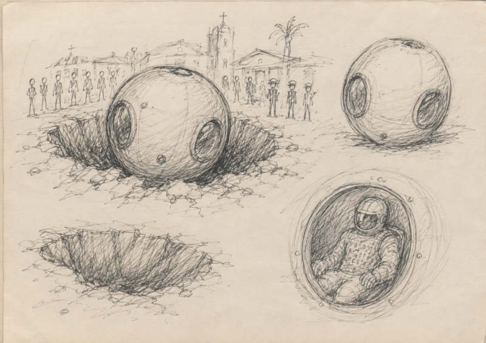

El 7 de agosto, el Departamento de Guerra publicó la quinta entrega de PURSUE en war.gov/UFO: 41 archivos nuevos —videos, documentos e imágenes— provenientes del propio Departamento, el FBI, la CIA, el Departamento de Estado y la Oficina Ejecutiva del Presidente, con material que va de 1950 a este mismo año. De ese lote, un puñado se llevó toda la conversación en redes: un triángulo silencioso que "apagó" las estrellas sobre Afganistán en 2002, un enjambre de orbes que aparentemente reaccionó cuando un avión artillado disparó su cañón, y un cable de la CIA de 1963 tan extraño que suena a guion de ciencia ficción.
Aquí el repaso de esos casos, con las imágenes oficiales que el propio FBI y el Departamento de Guerra publicaron junto a los documentos —y la aclaración, en cada uno, de qué tan lejos llega realmente la evidencia.
Qué es y qué trae Release 05
Lo más viral: el triángulo de Bagram
El expediente que dominó los titulares —CBS lo usó como título, "¿Viste eso?"— es un formulario FD-302 del FBI: el registro estándar que usa el Buró para documentar entrevistas a testigos. En 2024, un ex piloto militar relató a agentes federales lo que dijo haber visto en Bagram, Afganistán, en junio de 2002.
Según el reporte, poco antes de las 4:30 a.m. el piloto notó que las estrellas se "apagaban" sobre la base. Algo enorme cruzaba el cielo de oeste a este: un triángulo equilátero silencioso, sin luces visibles, a velocidad y altitud constantes —estimó unos 150 metros de tamaño—. El piloto que volaba junto a él también lo vio y solo atinó a decir: "¿viste eso?". El FBI produjo un boceto digital oficial del objeto, que acompañó el expediente.

Fuente: war.gov/UFO · Release 05
El mismo testigo contó algo más, ya en el terreno civil: declaró a los agentes que, desde octubre de 2023, "muchos pilotos han estado viendo el mismo evento" —luces en el cielo que comentan entre ellos por radio—, casi siempre entre medianoche y las 3 a.m. Él las vio por primera vez volando de Boston a Dublín, a 37,000 pies, y las describió como luces blancas que empezaban tenues, se intensificaban y se apagaban en ciclos de 10 segundos a un minuto. Las volvió a ver unas diez veces más, en direcciones tan distintas como Dakota del Norte, la costa oeste y el Atlántico medio —y en febrero de 2024 logró grabar un episodio con el celular desde la cabina de su avión.
El triángulo de Bagram no es el único de su tipo en esta entrega. El archivo suma otros tres avistamientos triangulares —de años distintos— y uno de ellos, el de Colorado Springs, tiene un nivel de detalle que ni siquiera la prensa reportó.


El expediente D031 —el del boceto de arriba, del tamaño de "un estacionamiento entero" según el testigo— tiene un origen casi cinematográfico. El hombre estaba mirando las estrellas cuando notó algo raro: una nube gris oscura, estacionaria, que "parecía pixelada o distorsionada de alguna manera". De esa nube empezó a emerger, apuntando hacia el sur-sureste, la punta de un triángulo negro sólido con una luz roja difusa —hasta que salió por completo: un triángulo equilátero con una luz roja en cada esquina, del tamaño estimado de "tres a cinco pisos" de grosor.
El objeto voló a velocidad de helicóptero, aceleró casi instantáneamente a Mach 1 o 2, y —el detalle que más llamó la atención de los investigadores— viró 90 grados de una manera "opuesta a como lo haría un avión convencional" al girar. El testigo notó ondas alrededor del objeto, como el efecto de espejismo que se ve al mirar el asfalto caliente a la distancia. Sesenta segundos después de perder de vista el triángulo, llamó a su esposa para contarle — y ella le dijo que su voz sonaba "robótica, como si hubiera interferencia electrónica" en la llamada.
Lo más extraño: la esfera de Brasil (1963)
Si el triángulo de Bagram ganó en viralidad, este es el expediente que más comentarios de incredulidad está generando —y, gracias al zip de documentos originales, ahora podemos citar directamente los tres archivos que arman el caso completo, no solo el resumen que circuló en redes.
Todo arranca con un reporte de radio captado por el Foreign Broadcast Information Service (FBIS) de la CIA la noche del 8 de noviembre de 1963, transmitido por Radio Tupi de Río de Janeiro:
📡EOP-UAP-D001 — FBIS, Radio Tupi, 8 nov. 1963
"Reportes desde el municipio de Conde, en Bahía, dicen que una gran esfera metálica cayó en el centro de la ciudad, dejando un agujero de cuatro metros de profundidad. La misteriosa esfera tiene aberturas en forma de ventana cubiertas con vidrio grueso. En su interior hay un cuerpo humano vestido con ropa pesada que lleva inscripciones que no pueden descifrarse. La población de Conde está intrigada, y las autoridades han sido informadas."

Ilustración conceptual · No forma parte del archivo oficial de war.gov/UFO
Cinco días después, la embajada de EE. UU. en Río de Janeiro envió un cable a Washington pidiendo que le confirmaran o desmintieran un reporte de prensa local casi idéntico: un "globo metálico tripulado" hallado cerca de Salvador, con un "tripulante muerto a bordo, vistiendo uniforme o traje espacial con extrañas marcas", y un cráter de impacto. El cable deja constancia de que ya se había especulado con que el objeto avistado en la zona podía ser "un globo meteorológico" —pero que, hasta ese momento, ningún objeto había sido hallado en tierra.
Es, en cierto sentido, el expediente más "clásico" de ovnilogía de los años 60 que ha aparecido en todo PURSUE hasta ahora: un relato de accidente con supuesto tripulante, transmitido primero por radio y luego por canales diplomáticos, y desmentido por el propio gobierno brasileño casi de inmediato. El Departamento de Guerra decidió publicar los tres documentos juntos —el reporte, la duda, y la desmentida— en vez de solo el más llamativo, lo cual dice bastante sobre el criterio de esta tanda en particular.
Lo más debatido: el enjambre del Golfo de Omán
El grueso documental de Release 05 —seis videos distintos— corresponde a un solo incidente: en septiembre de 2021, una tripulación de Operaciones Especiales a bordo de un avión artillado AC-130J grabó con su celular las pantallas de los sensores de a bordo durante un ejercicio de fuego real en el Golfo de Omán.
El expediente completo —desclasificado con sellos "SECRET//NOFORN" tachados— cuenta la secuencia con un nivel de detalle que no llegó a los titulares. Todo empezó cuando el avión soltó una bengala activada por agua para usarla como blanco de práctica. Al reencuadrar el sensor infrarrojo sobre la bengala, el Oficial de Sistemas de Combate (CSO) encontró algo que no esperaba:
📄DOW-UAP-D101 — Informe de Inteligencia, Golfo de Omán, 8 sept. 2021
"[El CSO] observó dos esferas frías de aproximadamente cuatro pies de diámetro, entre 0 y 20 pies sobre la superficie del agua, estacionarias sobre la bengala durante aproximadamente 15 segundos. Pasados esos 15 segundos, el CSO jaló el gatillo disparando el cañón de 105mm de la aeronave. Inmediatamente al jalar el gatillo, durante el breve retraso entre el disparo y el retroceso del cañón, el CSO observó al par de UAP alejarse volando rápidamente de la bengala y salir del campo del sensor, sin cambiar de altitud."
Lo que vino después es, según el propio informe, lo más difícil de explicar: la tripulación registró unas 25 instancias de UAP durante la misión, volando entre 250 y 1,300 mph, en modo "blanco-caliente" y "negro-caliente" al infrarrojo. Dos de los objetos volaron en formación "suelta pero coordinada", subiendo y bajando de altitud "como una ola", maniobrando alrededor, encima y debajo el uno del otro. La fuente que reportó el incidente añadió un comentario que quedó registrado tal cual en el documento: "Sabían que estaban volando juntos". Otros aparecieron en formación de tres, y otros más maniobraron erráticamente y de forma agresiva. No se observó ningún medio de propulsión.
Y hay un detalle final que alimenta tanto la sospecha como el escepticismo: la tripulación intentó guardar el metraje infrarrojo completo del incidente, pero la grabadora de video digital del avión falló de forma inexplicable y los datos del video se corrompieron. El caso, como casi todos en este archivo, quedó sin resolver por AARO. Es el expediente que más divide a los analistas: para unos, el patrón de reacción al disparo y el "comportamiento coordinado" sugiere maniobra inteligente; para los más escépticos, apunta a un artefacto óptico del sensor infrarrojo generado por el fogonazo del cañón —y la falla del DVR, a simple mala suerte técnica más que a algo más siniestro.
Un clip adicional, enviado por el Comando Central de EE. UU. (CENTCOM), muestra un objeto cruzando velozmente el cielo sobre una zona poblada de Medio Oriente en 2025 —también catalogado como no resuelto.
Lo más nuevo: las luces sincronizadas del oeste de EE. UU. (2026)
Release 05 introdujo un tipo de evidencia que no había aparecido en tandas anteriores: el testimonio directo de un agente especial del FBI que registró él mismo, con su propio sensor, el fenómeno que reportaba. En un incidente de este año en el oeste de EE. UU., el agente detectó una frecuencia de radio inusual, apuntó un sensor infrarrojo portátil en esa dirección y filmó dos áreas de contraste "negro caliente" moviéndose lentamente, en conjunto, durante entre 5 y 10 minutos.
Según analistas independientes que siguen el archivo completo de PURSUE, el agente incluso apuntó deliberadamente su cámara hacia un helicóptero Black Hawk que sobrevolaba la zona, para usarlo como referencia de escala —el objeto habría medido, según esa comparación, aproximadamente la mitad de un Black Hawk.


Pero el hallazgo más extraño de esta categoría —y de toda la Release 05, a juicio de buena parte de la comunidad que sigue el archivo documento por documento— no es visual: es un reloj. En un expediente separado (FBI-UAP-D037), un testigo describe haber visto luces rojas "en forma de guion" moviéndose junto a una cordillera montañosa, algunas tan bajas como 1.8 metros del suelo, sin ruido ni rastro de escape. Usó gafas de visión nocturna con más de 25 años de experiencia y descartó que fueran satélites, meteoros o drones conocidos.
Balance: qué confirma esto en realidad
Vale cerrar con el mismo marco que aplicamos a cada tanda de PURSUE: nada de lo publicado en Release 05 confirma actividad extraterrestre. El triángulo de Bagram sigue siendo un relato de testigo consignado en un formulario del FBI, no una imagen sensor confirmada. La esfera de Brasil viene con su propia desmentida diplomática adjunta. El enjambre del Golfo de Omán y las luces del oeste de EE. UU. son, formalmente, casos "no resueltos" por falta de datos —no evidencia positiva de origen anómalo.
Lo que sí cambia, tanda tras tanda, es el volumen y la calidad del material que el gobierno estadounidense pone a disposición pública sin necesidad de acreditación: de los videos granulados típicos de años anteriores, esta entrega suma por primera vez testimonio en tiempo real de un agente federal con objeto de referencia, y el primer caso latinoamericano —aunque desmentido en su momento— de todo el archivo.
// Para llevarse de este artículo
- Release 05 (7 ago 2026) sumó 41 archivos nuevos a PURSUE: 16 videos, 22 documentos y 3 imágenes, de agencias que van del FBI a la CIA.
- El caso más viral es el triángulo silencioso de Bagram (2002), relatado en un FD-302 del FBI e ilustrado con un render oficial.
- El más extraño es un cable de la CIA de 1963 sobre una esfera con supuesto ocupante en Brasil — desmentido por el propio Consulado de EE. UU. en la época.
- El más debatido técnicamente es el enjambre de orbes del Golfo de Omán (2021), que aparentemente reaccionó al disparo de un cañón de avión.
- El más novedoso es el testimonio en tiempo real de un agente del FBI en 2026, con un helicóptero como referencia de escala.
- El detalle menos difundido —y quizá el más inquietante— es la "anomalía del reloj": el cronómetro mecánico de un testigo se adelantó 25 minutos durante un avistamiento y no volvió a corregirse solo.
- Todos los casos permanecen oficialmente "no resueltos" — ninguno confirma origen extraterrestre.
Fuentes
-
Departamento de Guerra de EE. UU. (war.gov)Comunicado oficial y portal PURSUE — Release 05, con renders digitales del FBI y descarga de documentosFuente primaria: comunicado de prensa y base de datos interactiva con las imágenes usadas en este artículo.
-
CBS News · Stefan Becket"Pentagon releases new batch of UFO files: 'Did you see that?'"Cobertura detallada del contenido de Release 05, incluyendo el testimonio del piloto sobre Bagram y el informe del Golfo de Omán.
-
EarthSky"5th batch of Pentagon UAP files: Orbs and triangles"Desglose del cable de la CIA de 1963 sobre Brasil y su desmentida diplomática adjunta, además del conteo exacto de archivos por tipo.
-
Fox News"War Department releases video of what appears to be a UAP in Middle East"Detalle del clip de CENTCOM sobre Medio Oriente (2025) y contexto de la orden ejecutiva de Trump.
-
IBTimes UK"What Is in Trump's New Fifth Batch of UFO Files? Pentagon Releases Bagram Triangle and Mars Reports"Contextualiza los límites de la evidencia: ninguno de los casos confirma actividad extraterrestre.
-
Documentos primarios — war.gov/UFO, Release 05FBI-UAP-D024, D026, D030, D032, D033, D037 (FD-302); DOW-UAP-D101 (IIR); DOS-UAP-D001/D002 y EOP-UAP-D001 (cables e informe FBIS sobre Brasil, 1963)Lectura directa de los PDFs desclasificados descargados del propio portal oficial — base de todas las citas textuales de este artículo.